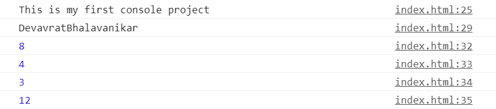

Visual Studio Code is a free to all coding software made by a Miccrosoft and works for windows ,linux,and mac os. Fetures are debugging,syntax highlighting , inteligent code completion and code refactoring and git.
The devloper console is a tool which logs the information associated with a web page , such as Javascript, network requests and security error. PRESS f12 to open console.And this a image of console.
console 27 to 30 indicate addition ,subtraction,division,and multiplication respectively.